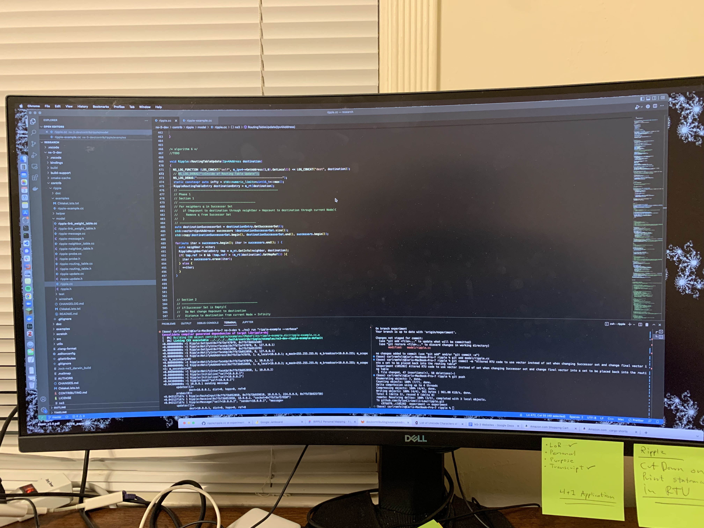
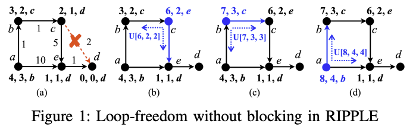

Here is an image of myself
Born and raised in Palo Alto for around 6 year until my family decided to moved back to Sweden. Spent around 12 years in Sweden until in 2018 when I came to UCSC to pursue a undergraduate degree in Computer Engineering. I am both an American and Swedish citizen and is fluent in both languages. I am currently part of the Computer Communication Research Group (CCRG) at UCSC and is currently helping the development of a new routing protocol under the supervison of professor J.J Garcia-Luna-Aceves.
I am an undergraduate student
RIPPLE Project: Developer since Summer 2022. The RIPPLE project is within the CCRG and is headed by Professor J.J Garcia-Luna-Aceves. My own supervisor for this project is Ph.D candidate Dylan Cirimelli-Lown who also was the person who invited me to work in the project when he was a TA for me in CSE150.

